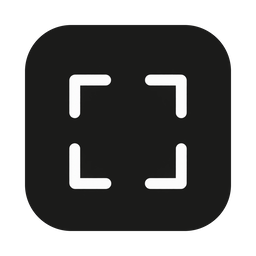

Still
A private photo library for your Mac. Local, offline, yours.
What it does
- TimelineBrowse your existing photo folders as one calm, scrollable timeline.
- PeopleOn-device face grouping finds the people in your photos.
- Live Photos, HEIC, GIFPlays and shows the formats your iPhone and the web produce.
- PlacesSee where your photos were taken on a map.
- Nothing leaves your MacNo account, no cloud, no tracking. Works fully offline.
Download
First launch
Still isn't notarized by Apple yet, so macOS will block it the first time.
- Drag Still to your Applications folder.
- Open it once (macOS will refuse).
- Go to System Settings > Privacy & Security and click Open Anyway.
Or, in Terminal: xattr -dr com.apple.quarantine /Applications/Still.app
Updates
Updates arrive inside the app: choose Still > Check for Updates…, then Restart to Update.